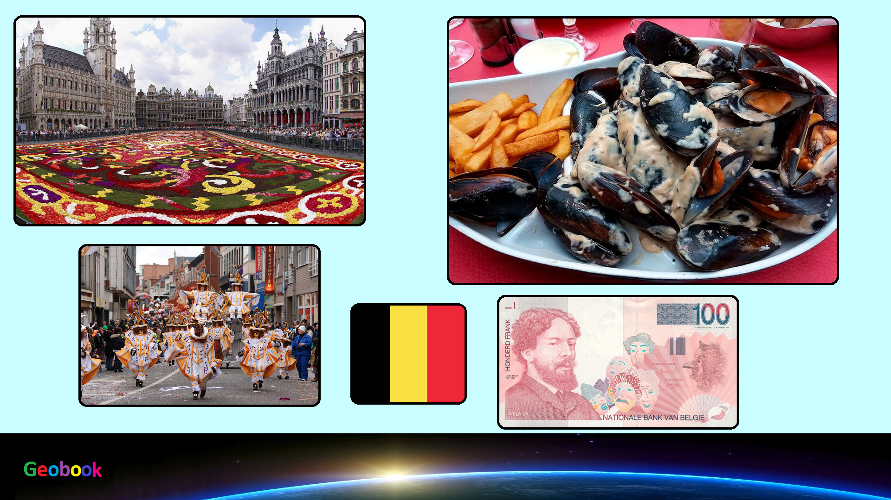

____
Происхождение названия
Исторически Бельгия была частью области, известной как Нижние Земли — региона, несколько более крупного, чем современный Бенилюкс, в который также входили части Северной Франции и Западной Германии. Название страны происходит от этнонима кельтского племени — белги, которое дало название римской провинции Белгика (лат. Gallia Belgica)[13], образованной в 16 году до н. э. С конца Средневековья до XVII века область Бельгии была процветающим и космополитическим центром торговли и культуры. В период между XVI и XIX веками Бельгия служила полем битвы между многими европейскими державами, заработав прозвище «поле битвы Европы», которое усилили две мировые войны. Страна возникла в 1830 году после Бельгийской революции, когда она отделилась от Нидерландов.
История
1477—1556 — династический брак Марии Бургундской ввёл бургундское владение в состав Священной Римской империи.
1556—1713 — в составе Испании. Восьмидесятилетняя война положила начало обособлению территорий Бельгии от протестантских Нидерландов.
1713—1792 — в составе Священной Римской империи как австрийские Нидерланды.
1792—1815 — в составе Франции.
1815—1830 — в составе Нидерландов согласно решению Венского конгресса. Однако многие в Бельгии были недовольны насильственным объединением с Нидерландами.
23 сентября 1830 — бельгийская революция, и в том же году Бельгия вышла из состава Нидерландского королевства и получила независимость.
4 апреля 1949 — Бельгия вступает в НАТО.
1957 — вступление Бельгии в Европейское экономическое сообщество (ЕЭС).
31 июля 1993 — скончался король Бодуэн, трон унаследовал его младший брат, Альберт II.
2001 — рождение первого ребёнка у кронпринца Филиппа и его супруги Матильды, продолжение династии.
2003 — в результате парламентских выборов премьер-министром вновь становится Ги Верхофстадт.
В 2003 году Бельгия стала вторым государством в мире, легализовавшим однополые браки (после Нидерландов).
12 января 2006 — Бельгия — председатель Организации по безопасности и сотрудничеству в Европе (ОБСЕ).
Правительство и политика
На данный момент действующий король страны — Филипп (с 21 июля 2013 года).
Данные: Дата рождения 15 апреля 1960. Место рождения Бельгия Лакен, Брюссель. Супруга Матильда. Дети Елизавета
Габриэль
Эммануэль
Элеонора.
На данный момент действующий прмьер-министр страны - Де Кро, Александр (с 1 октября 2020).
Данные: Дата рождения 3 ноября 1975. Место рождения Вилворде, Халле-Вилворде, Брабант, Бельгия.
Праздники
| Дата | Праздник | Примечание |
|---|
| 1 января | Новый год | Начало календарного года |
| 1 мая | День рабочего | В честь всех рабочих |
| 9 мая | Вознесение Господне. | Вознесение Господне. |
| 19 мая | День Святой Троицы. | День Святой Троицы. |
| 20 мая | Духов День | Духов День |
| 15 августа | Воздвижение | Воздвижение |
| 25 декабря | Рождество | Празднование Рождества |
____
